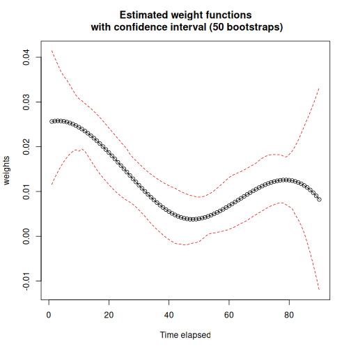

Weighted Cumulative Exposure (WCE)
The Weighted Cumulative Exposure (WCE) model[1] extends the Cox proportional hazards model to time-varying exposures whose effect on the hazard depends not only on the current exposure level but also on how it has evolved over time. It estimates a weight function that captures how the influence of past exposure on the hazard changes with the time elapsed since it occurred, so that the cumulative effect at any given time is a weighted sum of the exposure history up to that point.
Let’s make an example with drugdata dataset from WCE package[2]. Before load survivalGPU, use your virtual python environment (see vignette("installation")).
library(reticulate)
use_virtualenv(virtualenv = "survivalGPU")
Error in `use_virtualenv()`:
! Directory ~/.virtualenvs/survivalGPU is not a Python virtualenv
Id Event Start Stop sex age dose
1 1 0 0 1 1 40 0
2 1 0 1 2 1 40 0
3 1 0 2 3 1 40 0
4 1 0 3 4 1 40 0
5 1 0 4 5 1 40 0
6 1 0 5 6 1 40 0
Check if CUDA is detected :
use_cuda()
[1] FALSE
By default, functions run with GPU if detected. Then we specify the number of bootstrap replicates, and consequently the batchsize argument, according to CUDA drivers detection.
if (use_cuda()) {
n_bootstrap <- 1000
batchsize <- 200
} else {
n_bootstrap <- 50
batchsize <- 10
}
To fit a model, use wceGPU(): its arguments follow those of WCE::WCE() from the ‘WCE’ package.
The number of interior knots of the splines is usually not known in advance. As in the WCE package, nknots accepts several candidates (e.g. 1:3): one model is fitted per candidate, and the one that minimizes the information criterion is selected (the BIC by default, or the AIC with aic = TRUE).
wce_gpu <- wceGPU(data = drugdata, nknots = 1:3, cutoff = 90, id = "Id",
event = "Event", start = "Start", stop = "Stop",
expos = "dose", covariates = c("age", "sex"),
constrained = FALSE, aic = FALSE, confint = 0.95,
x = TRUE)
wceGPU() fits the model only; with x = TRUE, it also stores the columns of data that the model uses. Bootstrap confidence intervals are added afterwards with bootstrap(), which refits the model on R patient-level resamples of that stored data (the patients are identified by the id column), processed batchsize copies at a time on the GPU. The bootstrap therefore always uses exactly the data the model was fitted on.
The bootstrap resamples are drawn by PyTorch, not by R, so set.seed() has no effect on them. To get reproducible results, set PyTorch’s seed:
invisible(reticulate::import("torch")$manual_seed(42L))
wce_gpu_bootstrap <- bootstrap(wce_gpu, R = n_bootstrap, batchsize = batchsize)
In the summary, there are estimated coefficients for the covariates of the selected model with his confidence interval, calculated with var-covariance matrix, and information to see the significance of the covariates. It’s also possible to have confidence interval with bootstrap.
summary(wce_gpu_bootstrap)
Weighted cumulative exposure (WCE) in a Cox proportional hazards model
Weight function: cubic spline with 1 interior knot(s), unconstrained
Covariates:
coef exp(coef) se(coef) z Pr(>|z|)
age 0.0115718 1.0116390 0.0039769 2.9097 0.003617 **
sex 0.6875935 1.9889234 0.1188602 5.7849 7.256e-09 ***
---
Signif. codes: 0 '***' 0.001 '**' 0.01 '*' 0.05 '.' 0.1 ' ' 1
Bootstrap percentile intervals for the coefficients (50 replicates, level 0.95):
2.5% 97.5%
age 0.003853 0.01827
sex 0.432600 0.93930
Partial log-likelihood: -1891.644, BIC: 3824.924
Number of events: 383
See plot(wce_gpu_bootstrap) for the estimated weight function.
With allres = TRUE, the summary shows every candidate that was tried, with its partial log-likelihood and information criterion, and the one that was selected (also available in wce_gpu_bootstrap$best.nknots).
summary(wce_gpu_bootstrap, allres = TRUE)
Candidate models tried:
nknots loglik BIC
1 1 -1891.644 3824.924
2 2 -1891.752 3831.089
3 3 -1891.260 3836.053
Best model: 1 knot(s), by BIC.
Bootstrap and selection of the number of knots
With several nknots candidates, bootstrap() selects the number of knots again in every bootstrap replicate:
the bootstrap resamples (at the patient level) are drawn once and shared by all the candidates, so that they are compared on exactly the same data;
every candidate is fitted on every resample;
each replicate keeps the candidate that minimizes the information criterion computed on its own resampled data (for the BIC, with that replicate’s own number of events).
The bootstrap confidence intervals of the weight function, of the covariates and of the hazard ratios therefore account for the uncertainty on the choice of the number of knots, and not only for the uncertainty on the estimates for a fixed number of knots. The number of knots selected by each replicate is stored in bootstrap.best.nknots:
table(wce_gpu_bootstrap$bootstrap.best.nknots)
1
50
Since different replicates may select splines with different numbers of coefficients, the bootstrap spline coefficients (bootstrap_est, est_CI) are only returned when a single nknots value is given. With a single value, there is nothing to select and every replicate uses that number of knots, as in a standard bootstrap.
The risk function can be plot, and if you added bootstrap, confidence band intervals will be visible.
plot(wce_gpu_bootstrap)

Hazards Ratios
HR() computes the hazard ratio between two exposure profiles — for example a constantly exposed patient versus an unexposed one — using the estimated WCE weight function. If bootstrap() was called on the model, it also reports a bootstrap confidence interval for that hazard ratio.
# cutoff at 90 in the WCE model
exposed <- rep(1, 90)
unexposed <- rep(0, 90)
HR(wce_gpu_bootstrap, exposed, unexposed)
HR CI 2.5% CI 97.5%
[1,] 3.032552 2.255275 4.005504